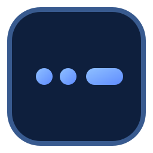

Usage example
Type War in the translator to compare text and Morse forms and verify spacing rules.

Morse Code GeneratorMorse Reference
Morse for War is shown below. Use this as a quick reference or jump to the translator for practice.
Type War in the translator to compare text and Morse forms and verify spacing rules.
Repeat this sequence in short sessions, then combine it with common phrases for better retention.
Translate War and copy the output to your notes.
Morse output: - .-. .- -. ... .-.. .- - . / .-- .- .-. / .- -. -.. / -.-. --- .--. -.-- / - .... . / --- ..- - .--. ..- - / - --- / -.-- --- ..- .-. / -. --- - . ... .-.-.-
War works well as a quick-reference term while building fluency with common Morse vocabulary.
War in Morse code is .-- .- .-..
Use the translator page to generate War, then repeat the pattern in short sessions.
Use the translator and phrase pages to move from single terms into longer Morse practice sessions.
Continue practice with nearby keyword targets to strengthen recognition patterns.